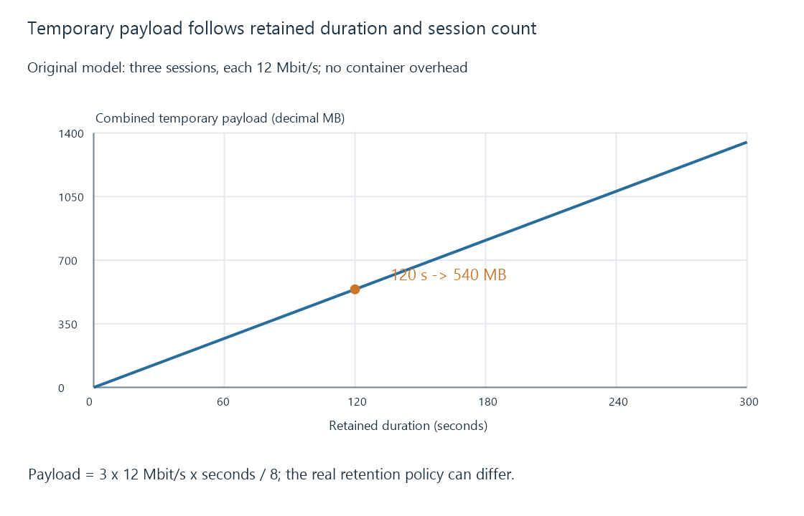

Temporary storage and RAM disks
Temporary storage holds disposable work such as transcoding output, and a RAM-backed location trades disk activity for memory use and volatility.
“Temporary” describes data's role, not its physical medium. Temporary files can live on an SSD, HDD or memory-backed file system. They remain necessary while an active operation uses them, even when they are not intended to survive afterward.
For Emby, transcoding output is a useful example. The server creates data for the player to consume. Source media and persistent application data have different lifetimes and should not be treated as disposable because the current playback is temporary.
Space follows retained output
If a session retains 120 seconds of 12-Mbit/s output, its encoded payload occupies about 180 decimal MB:
12,000,000 bits/s × 120 seconds ÷ 8 = 180,000,000 bytes
Three equal sessions: 3 × 180 MB = 540 MB
The example assumes this specific retention window. Actual formats, overhead, throttling, cleanup and seeking affect the amount retained. It is not a statement that Emby always keeps 120 seconds.

Capacity also has to accommodate concurrent sessions and interrupted work that has not yet been removed. An output bitrate lower than the source bitrate can reduce temporary bytes without reducing the source's own read demand by the same factor.
What a RAM-backed file system consumes
Linux tmpfs stores file data in memory and can move eligible pages to swap when configured to do so. It is not necessarily a guarantee that every byte stays in physical RAM. A size limit caps growth; it does not preallocate that entire amount as occupied memory.
| Location | Resource used | Behavior after loss of volatile state |
|---|---|---|
| Ordinary disk directory | Disk capacity and I/O | Files can remain until cleanup |
| tmpfs | Memory, and possibly swap | Files do not provide persistent storage across reboot |
| Fixed RAM-disk arrangement | Reserved or allocated memory, depending on implementation | Persistence requires a separate mechanism |
A RAM-backed output directory shares memory resources with the server, encoders and operating system. If it grows too far, swapping, reclaim or memory exhaustion can make a previously fast system slower. Container memory accounting can add another limit.
Choosing the location around the operation
A useful temporary location has sufficient capacity, predictable write access and a lifetime that covers active playback. Its speed matters when temporary I/O is a demonstrated bottleneck. Moving output into RAM does not remove the CPU or GPU work required to encode it.
Keep persistent database and configuration files outside disposable storage. For existing installations, use the documented transcoding settings and the server's actual data paths to distinguish those roles; a directory's name alone does not establish that deleting its contents is harmless.
See Also
- Transcode temporary files and generated output
- Storage caches: reusable reads and deferred writes
- Read-only media access and separate writable data